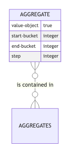

automaton-optimization.time-based.impl.aggregate
An aggregate is a value object used to define a group of buckets that is homogeneously aggregated in bucket-aggregate.
start-bucketis the firstbucketof the aggregate (start-bucket ∈ ℕ).end-bucketis the lastbucketconcerned with that aggregate -end-bucketis excluded - (end-bucket ∈ ℕornil).stepis the number ofbuckets gathered in thataggregate,step ∈ ℕ*
Note that without knowing the other aggregate in the aggregates, the targeted bucket-aggregate are not fully defined.

default
(default {:automaton-optimization.time-based/keys [step], :as aggregate})Default step to 1.
schema
set-end-bucket
(set-end-bucket {:automaton-optimization.time-based/keys [end-bucket], :as aggregate} {:automaton-optimization.time-based/keys [start-bucket], :as _next-aggregate})For an aggregate, its end-bucket is : * not modified is already set, * defaulted to start-bucket of the next-aggregate if set.